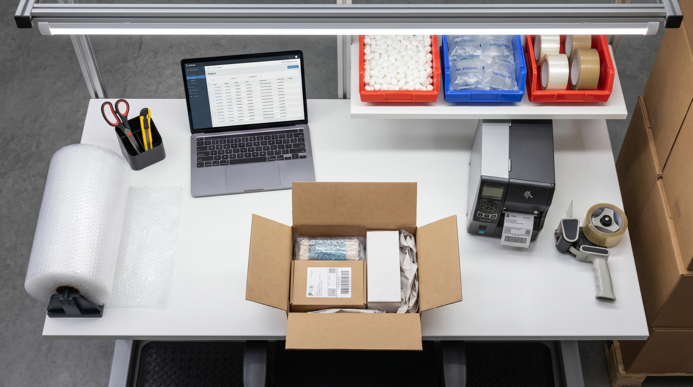

De fleste lagerfolk har proevetde det. Du maa bukke dig for at hente tape fra det underste hylde, scanneren ligger på den forkerte side, og labelstrimlen er laengere vaek end den burde være. Resultatet er, at medarbejderen taber 8-12 sekunder pr. pakke på bevaegelser der ikke boer være der.
8 sekunder lyder ikke af meget. Men ved 200 pakker om dagen er det 26 minutters spildtid. Pr. medarbejder. Hver dag. Det loeber op til mere end 2 timer om ugen i rent tab, og det er inden vi taler om rygsmerter, fejl og frustration.
Et godt pakkebord er ikke dyrt. Det kræver bare at du tænker det igennem inden du stiller det op.
👉 Vil du se hvordan SmartPack styrer din pakkestation? Kontakt os her
Højde og ergonomi: det vigtigste du kan gøre
Et pakkebord skal være i den højde, hvor medarbejderens albuer er let boejede, når hjaenderne hviler på bordet. Det er typisk 85-95 cm for en gennemsnitlig voksen person, men det varierer.
Problemet på de fleste lagre: bordet er enten for lavt (et gammelt plankebord) eller for højt (et skrivebordshøjt bord). Begge dele giver belastning. For lavt giver rygsmerter. For højt giver skulder- og nakkeproblemer.
Hvad du skal gøre:
- Maal højden på dine medarbejdere. Ikke gennemsnittet, men dem der bruger bordet mest.
- Overvej højtaellende pakke-borde (haevc-sankeskriveborde er dyre, men holdbare over tid).
- Minimum: saet et fast bord i den rigtige højde. Juster med anti-traethedsmaatter under faedderne.
- Anti-traethedsmaatter reducerer belastning og oejer koncentrationen. De koster 300-600 kr. og er nok den bedste investering pr. krone på et lager.
Sidde eller staa? Staa er standard på pakkelager, men langvarig staaende arbejde kræver gode sko og maatter. Hvis du pakker mere end 6 timer om dagen, er en hoj barstol som afveksling vaerd at overveje.
Layout: hvad der skal være inden for armslængde
Tommelfingerreglen er enkel: alt hvad medarbejderen bruger mere end tre gange i timen skal være inden for en armslængde. Det der bruges en gang i timen maa kræve eet skridt. Det der bruges en gang om dagen kan være laengere vaek.
Det betyder typisk:
- Inden for armslængde (0-60 cm): tape, saks/kniv, scanner, kuglepenne, labels (loost).
- Eet skridt vaek (60-150 cm): labelprinter, 2-3 kassestørrelse, bobbelfolie-rulle eller papirfyld.
- To skridt vaek (150-250 cm): storrekasser, reseroveforsyning af emballage, A4-printer.
Et klassisk fejlopsætning: labelprinter bag ved medarbejderen. Det lyder bagatelagtigt. Men ved 150 pakker om dagen er det 150 halv-omvendinger, og det taeller på kroppen over tid.
Brug en labelprinterarm eller en lille konsol på siden af bordet, saa printout falder ud inden for synsfeltet. Det sparer tid og reducerer fejl, fordi medarbejderen ser labelen med det samme.
Lysforhold: mere end du tror
Standard lagerhal-belysning ligger typisk på 200-300 lux. Det er nok til at gå rundt, men for lidt til præcist pakkearbejde. Du boer have mindst 500 lux direkte over pakkebordet.
Lavt lys forårsager:
- Højere fejlrate (medarbejderen laaeser forkert på ordrelisten eller scanneren).
- Hurtigere oejentroethed, som øger fejl fra middag og fremad.
- Langsommere arbejde, fordi medarbejderen er usikker på hvad han ser.
En simpel LED-arbejdslampe monteret over bordet koster 200-400 kr. og loser problemet. Vaelg en lampe med 5000-6500 K farvetemperatur, det er en kold, klar belysning der ligner dagslys og holder folk vaagren.
Skaermopsætning og systeminformation
Hvis dine medarbejdere pakker med et WMS (fx SmartPack), skal skaermen sidde i den rigtige position. Den skal være synlig uden at medarbejderen behøver at dreje kroppen. Det ideelle er en arm-monteret skaerm i oejenhojde til venstrehaandede og hojrehaandede positioner.
Tablet vs. skaerm: tablets er populære fordi de er fleksible, men de kan tippe og kræver staender. En fastmonteret skaerm på 15-24 tommer giver bedre arbejdsflow på en fast pakkestation.
I SmartPack scanner medarbejderen pakkestation-QR-koden når han starter. Systemet ved hvilken printer der hoerer til stationen, og labelen printes automatisk. Det betyder at opsætningen er bundet til stationen, ikke til personen.
De fejl der koster mest
Her er de fejl vi ser igen og igen på lager vi besøgtger:
- Forkert kasseplacering. Kasserne står på gulvet bag medarbejderen. Hvert bukke kostar energi og tid.
- Ingen fast plads til ingenting. Saks, tape og scanner wandrer rundt. Man leder i stedet for at pakke.
- For faa kassestørrelse. Hvis du kun har een kassestørrelse, bruger du for meget fyldmateriale og betaler for meget i vaegt og volumen på fragten.
- Printerlabels der koester tid. Printer der ikke er kalibreret, papir der sider faest, eller printer der er for langt vaek.
- Ingen daglig 5-minutters rydning. Et rodet bord er ikke bare aestetisk. Det oejer fejl og søger tid.
Saet en standard for bordet. Haeng et billede af "korrekt opsat bord" ved stationen. Det lyder banalt, men det virker.
Hvornår boer du opgradere din pakkestation?
Det er tid når:
- En medarbejder pakker under 30 pakker i timen konsekvent (uden at det skyldes ordrekompleksitet).
- Fejlraten på pakkelinjen er over 1%.
- Medarbejdere klager over ryg, skuldre eller oejne efter 2-3 timers arbejde.
- Gennemsnitlig pakketid per ordre er stigende uden at ordrekompleksiteten er det.
Kig på din pakketid pr. ordre i SmartPack under produktivitetsrapporten. Hvis tallet stiger maaned over maaaned, er bordet ofte årsagen, ikke medarbejderen.